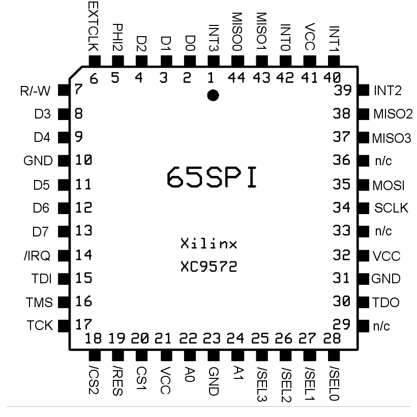

SPI65/B
(C) 2011-2012 André Fachat
I started to use SPI in my designs with the SD-card interface and the netusb2 card for my CS/A computer. I found that a single chip solution would be great to reduce development effort and improve performance of such a solution.
I found Daryl Rictor's 65SPI, but it had the following disadvantages to me:
- It only had a single MISO - so decoupling between slaves was not possible. This is normally not necessary, but I wanted to separate the SD-Card interface from the others. This also requires no open collector level translators in case you have 3.3V devices on a 5V SPI65/B
- It had no interrupt controller for slave-based interrupts, so that separate interrupt logic would be necessary to forward slave interrupts to the 6502.
- Some minor quirks: select lines resetted to zero (selected), instead of one (deselected), and you had to explicitely read the data register to clear the interrupt (even if you wanted to directly write another byte).
The quirks in the last point have been fixed by Daryl in his solution after we had discussed these things. However, in the meantime, I had developed my own solution:
The SPI65/B is a reimplemented version of Daryl's 65SPI, but with these modifications:
- The divisor is shortened to 4 bit, so you can divide the clock by between 2 and 16.
- The chip handles four instead of eight devices
- The MISO is separate for each device (in case that separation is not necessary you can put the same signal on all pins)
- There are four high-active interrupt inputs (one for each device), with interrupt enable bits each, to forward the interrupts to the host (6502). Those interrupts are independent from the SPI interrupt.
- The status of the interrupt bits can also be read from a register
- Select lines initialize to one (deselected), and writes also clear the SPI interrupt
- If only the lowest four bits of the divider are used, and only the low four devices, it is software-compatible with Daryl's 65SPI
- 2013-01-26 Fixed the VHDL, it was producing spikes in mode 3. Unfortunately there was not enough space in the chip, so the divisor had to be reduced to three bits.
- 2012-01-01 Started this page
The hardware of the SPI65/B is a Xilinx 9572 CPLD. This device is 5V, so for 3.3V devices level translation is required.
Here is the pin description:
- PHI2 Microprocessor system clock (input)
- A0-A1 Microprocessor address bus (input)
- CS1 Chip select, active high (input)
- /CS2 Chip select, active low (input)
- R/-W Microprocessor data read/write line (input)
- D0-D7 Microprocessor data bus (bidirectional)
- /IRQ Microprocessor interrupt line, active low (output)
- /RES Microprocessor reset line, active low (input)
- EXTCLK External shift clock (optional input)
- MISO0-3 SPI Master In, Slave Out line (4 inputs, one for each device)
- MOSI SPI Master Out, Slave In line (output)
- SCLK SPI Shift Clock output
- /SEL0-3 Slave Select lines (4 outputs, one for each device)
- INT0-3 Interrupt input (4 inputs, one for each device)
- GND System ground
- VCC System +5vdc
- n/c No connection
Please note that the CPLD is basically "full". If you need to reassign signals to other pin positions, your mileage may vary. I already had problems placing the signals in a way fitting my netusb2 board.
This section gives an overview on the registers
| CS1 | /CS2 | PHI2 | A0 | A1 | Read (R/-W=1) | Write (R/-W=0) |
|---|---|---|---|---|---|---|
| 0 | x | x | x | x | Hi-Z | Hi-Z |
| x | 1 | x | x | x | Hi-Z | Hi-Z |
| x | x | 0 | x | x | Hi-Z | Hi-Z |
| 1 | 0 | 1 | 0 | 0 | SPI Data In | SPI Data Out |
| 1 | 0 | 1 | 0 | 1 | SPI Status Register | SPI Control Register |
| 1 | 0 | 1 | 1 | 0 | Bit 0-3: SCLK Divisor Bit 4-7: INT0-3 status |
Bit 0-3: SCLK Divisor Bit 4-7: n/a |
| 1 | 0 | 1 | 1 | 1 | Bit 0-3: Slave Select 0-3 Bit 4-7: IEN0-3 interrupt enable |
Bit 0-3: Slave Select 0-3 Bit 4-7: IEN0-3 interrupt enable |
For a detailed description see the documentation linked below
| Here is the updated documentation and the VHDL (source & binary) files to program the CPLD. Note: uses the same constraints file as 1.0. |
|
| Here is the documentation and the VHDL (source & binary) files to program the CPLD |
|
Return to Homepage